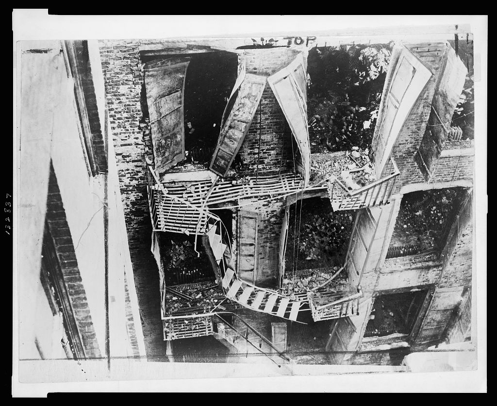

Directions: Study the photograph and the background note, then answer the questions.

Background. On March 25, 1911, fire broke out on the top floors of the Triangle Shirtwaist factory in New York City, where hundreds of young immigrant women sewed clothing in crowded rooms. Some exit doors were locked, and the building's only fire escape was a narrow metal stairway bolted to the outside wall. As workers crowded onto it, the fire escape tore away from the building and collapsed. By the time the fire was out, 146 workers were dead.
sweatshop: a factory or workshop where workers labor long hours for low pay in poor conditions
fire escape: a metal stairway or balcony on the outside of a building, meant for escape during a fire
1. What details in the photograph show that the fire escape failed the workers who used it?
2. The fire escape was legal and required by the building code of the time. What does its collapse suggest about how safety rules were written and enforced in 1911?
3. Which of the four problems from this lesson does this photograph best illustrate? Name one specific reform a Progressive would have demanded after seeing it, and explain how that reform answers the problem.
1. The metal structure is twisted and torn away from the wall, its platforms bent and hanging at angles instead of standing level. A working fire escape would be intact and attached; students should cite the visible bending, separation from the building, and collapsed sections.
2. Rules existed on paper but set low standards and were weakly inspected. The escape met the code yet could not hold the weight of the people it was built to save. Proficient answers connect this to the lesson's pattern: government had grown more slowly than the factories it was supposed to oversee, and owners faced little pressure to go beyond the minimum.
3. Problem 1, Work (dangerous conditions, no real protection for workers). Acceptable reforms include required outward-opening unlocked exit doors, regular fire drills, sprinklers, stronger fire escape standards with real inspections, or factory safety laws with penalties. The reform must answer the specific failure the student named, not just "make factories safer."
Teacher note. This check is formative. The common weak answer on question 2 blames the factory owners alone; push students toward the enforcement gap, which is the Progressive argument. The Triangle fire is treated again in Lesson 4 with consumer and labor protection laws.